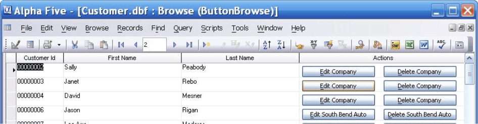
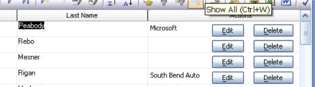
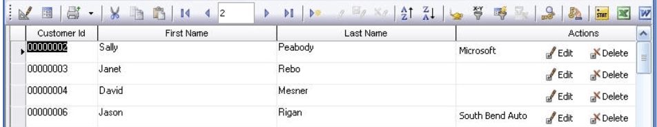

Placing Buttons into Browses
You may place one or more buttons into any column of a browse. The button style may contain any combination of:
static text
graphic
dynamic text (computed from data in the current row)
Each column of the browse has a .displayequation property. This property defines the button format. Here are three examples.
Dynamic Text
If the company field is blank, the button text displays "Edit Company". It displays "Edit
ButtonBrowse:company.field.displayequation = "'<25&Edit ' + if(company=, 'Company', alltrim(company)) + '!edit> <25&Delete ' + if(company=, 'Company', alltrim(company)) + '!delete>'" |

As you can see, the column contains two buttons.
Static and Dynamic Text
This example shows a combination of static and dynamic text. It displays the company name if it is not blank.
ButtonBrowse:company.field.displayequation = "'{\'20' + alltrim(company) + '}<&Edit!edit> <&Delete!delete>'" |

As you can see, the column has both text and buttons in it.
Text and Graphic
This example shows a combination of static text, dynamic text, and icon graphics. It displays the company name if it is not blank.
ButtonBrowse:company.field.displayequation = "'{\'20' + alltrim(company) + '}<%B=F;O={J=C}{I:\'$$code.action.edit\'}Edit%edit> <%B=F;{J=C}O={J=C}{I:\'$$code.action.delete\'}Delete%delete>'" |

The icons and buttons have a OnFlyOver style is used for the buttons. They do not look like buttons until you put your mouse over them.
Limitations
Desktop applications only.
See Also